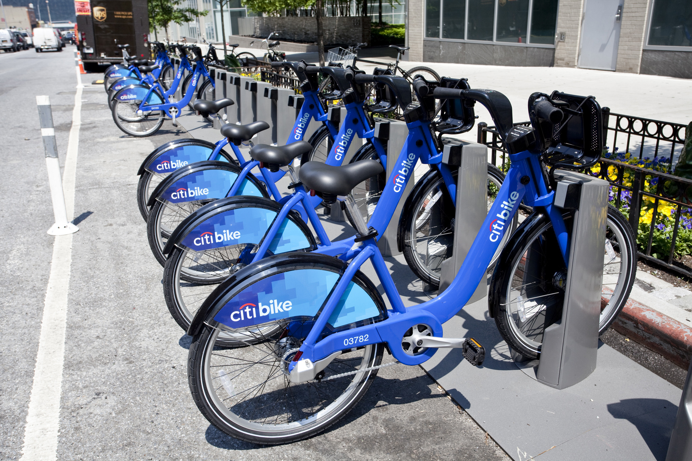

This is a citi-bike. They can be found all over the city, from the Lower East Side all the way to the Bronx. This is a diagram of what a citi-bike is made up of and all its unique factors.
This is what a citi-bike dock looks like. They can be found all around the city! You can either get a bike through a citi-bike membership or you can pay a one time fare for a 45 minute trip. You can dock your bike at any bike throughout the city. A amazing ride for a extremely fair price.